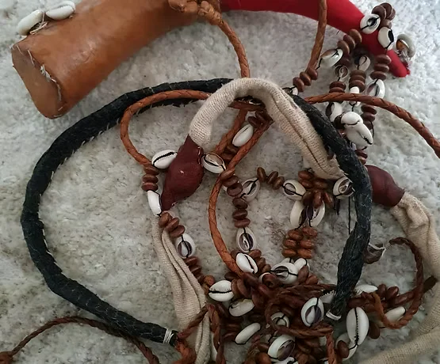

01
Le Gris-Gris de Vision
200 Ans de Transmission
Ce gris-gris a été confectionné par mon arrière-arrière-arrière-arrière-grand-père il y a plus de 200 ans. Il a été enrichi par chaque génération avec de nouveaux cauris, de nouvelles herbes sacrées, de nouvelles incantations.
Ses pouvoirs extraordinaires :
- Il me permet de VOIR votre situation à distance, même si vous êtes à des milliers de kilomètres
- Il révèle vos ennemis cachés, proches ou lointains
- Il montre les obstacles invisibles qui bloquent votre chemin
- Il indique les solutions spirituelles adaptées à votre problème
Lorsque je porte ce gris-gris pendant une consultation, je vois des images, des visions, des informations que vous n'avez jamais révélées à personne. C'est la preuve de son authenticité. Mes clients sont toujours stupéfaits quand je leur décris des détails précis de leur vie sans qu'ils m'aient rien dit.
Prendre rendez-vous pour une consultation